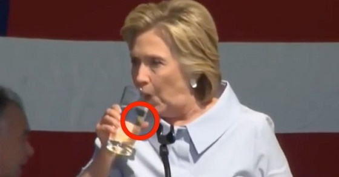
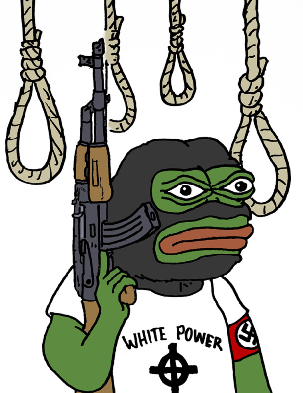

1. Introduction
2. Medium Is The Identity
3. The Meme As A Political Tool
4. Cheap Images And Scary Oneliners
5. Creating The Troop With Virtual Propaganda
6. Moving The Mass For The Sake Of Trolling
7. Doubtful Laughter And Underlying Political Messages
8. Frogs And Wrinkled Man As Mascots Of A Revolution
9. Anonymous Leaders Of The Mob
10. Conclusion
How To Sculpt A Crowd: Ctrl, Alt, Left, Right
Niels van der Donk, Bachelor Graphic Design Thesis.
Royal Academy of Art, The Hague. 2018
1. Ivan Sutherland using his own developed machine called "Sketchpad". 1962
2. A Brute Chart by /r/FindBostomBombers, a community of amateur criminologists. 2013

3. Still from video created to highlight Hillary Clinton seemingly spitting green substances into her glass. 2016
4. Chart Brute highlighting Hillary Clinton's head, unsure what is trying to be shown. 2016
5. Chart Brute showing wheelchair lift on Hillary Clinton's special van. 2016
6. Speculative Chart Brute assuming Hillary Clinton has a catheter. 2016
7. Chart Brute trying to proof the #pizzagate theory by showing Hillary Clinton might be a cannibal based on the syntoms of the disease "Kuru". 2016
8. Expanding Brain Meme concentrated on typefaces. Know Your Meme. 2017
9. Expanding Brain Meme about the debate on pineapple on pizza. Know Your Meme. 2017
10. Expanding Brain Meme ridiculing the Spain - Catalonia independence issue. Skrillex Is Overated And Stuff: Chapter II (Facebook page). 2017
18. Anti-semetic Polish Poster saying "The Soviet Pyramid". It depicts soviet working class suffering under the weight of the Soviet army, Jewish bankers and Stalin. 1919
35. Image showing similarities between the Kek and Nazi flag. 2017
36. Kekistan meme combining Pepe and "Liberty Leading the People" by Eugène Delacroix. 2016
37. Kekistan meme combining Pepe and North Korean propaganda image. 2016
38. Kekistan flags being shown at the Boston Free Speech Rally. 2017
39. Shia LaBeouf next to his artwork "He Will Not Divide Us". 2017
40. Image of He Will Not Divide Us flag. 2017
41. Image showing research in flight patterns on the He Will Not Divide Us livestream. 2017
42. Image showing research in flight patterns on the He Will Not Divide Us livestream. 2017
43. Screenshot of the He Will Not Divide Us flag replaced by a Trump hat. 2017
44. The He Will Not Divide Us flag with a timestamp. 4chan, /Pol. 2017
45. Who Wore It Better meme. 2016
46. Who Did It Better manipule showing resemblance between the iconoclasm of ISIS and the removal of confederate statues. 2017
47. Iconoclasm of ISIS on ancient Assyrian site of Nimrud. 2015
48. Picardia manipule showing resemblance between the iconoclasm of ISIS and the removal of confederate statues. 2017
49. Different forms of Picardia. 2017
50. Anti socialist Picardia gif. 2017
51. Picardia manipule ridiculing gender pronounce rules in Canada. 2017
52. Original image of Pepe in "Boy's Club". Matt Furie. 2005
53. Screenshot of Nicki Minaj posting a Pepe meme on her Instagram. 2014
54. Screenshot of Katy Perry posting a Pepe meme on her Twitter. 2014
55. Screenshot of Donald Trump posting a Pepe meme on her Twitter. 2015

56. White Power Pepe manipule. 2017
57. Jewish caricature Pepe in front of image of the Twin Towers exploding. 2014
58. Matt Furie's try to kill Pepe. 2017
1. Introduction
>>
Anonymous, "4chan" 10/01/2015
The first of our kind has struck fear into the hearts of America… This is only the beginning. The Beta Rebellion has begun. Soon, more of our brothers will take up arms to become martyrs of this revolution.
The year is 2017. Poorly drawn pictures of frogs influence the political and social state of entire nations, Facebook offers 71 gender options1 when creating a profile on their website and the word “cuckservative” has his own Wikipedia page2. We live in times were online culture wars have shaped our identity and is currently building our future. The Donald subreddit3
defined the tone of the race for a young and newly politicized generation whilst the mainstream media is trying to desperately catch up with a subcultural in-joke style wave of politically engaged millennials.
All of the above deals with the recent politically incorrect movement of the alt-right, but also about the left wings answer to compete, the alt-left.
Contemporary political movements from both left and right are leaderless, transgressive and mainly take place on the internet. Whilst it’s always been suggested that mainstream media has a high influence on society and political voting outcomes, things have changed drastically in the past few years. We now live in a new age were sharing entertaining pictures with a political undertone have greater power than the likes of Fox News and CNN. The recent election of Trump shows that conveying a message is easier done by two sentences and a picture than giving a speech for a crowd.
A culture war took place in the digital sphere where you and I also took our part in. And as a result, Trump became president of the United States.
It’s clear that politics don’t shape culture, but culture shapes politics.
What happened? What were the tactics used on the battle front? All of the elements that together resulted in a more right-wing environment can be taken apart and explained. More importantly, how can we, as Graphic Designers, learn from these tactics and properly use them? The subjects “meme wars” and “online activism” have already been touched by Graphic Design studio Metahaven in their book “Can Jokes Bring Down A Government”4, but instead of explaining I would rather concentrate on how to appropriate the tactics. Nowadays, Graphic Design students at the Royal Academy of Art are asked to give solutions to society and convey their personal (political) message. Graphic Design at the Royal Academy of Art is now more the ever a political practice, heavily based around left-wing politics and more Graphic Design educations are changing into a more poltical engaged practise. But looking at the election results, we somehow failed as online media has overthrown the poster. We have to adapt to the medium, but also the way of speech.
As a 4chan user and contributor for over 8 years, I’ve been in the center of this online culture wars and being able to understand their ironic and transgressive style of humour. Within this thesis, I would like to take you on a deep dive into their layers of irony to their political core and find out how we can use their way of conveying their message in Graphic Design.
To make my points clear, and why I came up with certain Graphic Design principles, I have gathered stories that deal with the subject. All chapters will mainly exist out of examples that together convey my message. I do not support most of the outcomes of both Alt-Right and left “movements”, I rather romanticize the idea that online cultures influences society.
The triumph of Alt-Right within the culture war which is heavily based on the internet, was not only a triumph for the political right but also for alternative media. In opposition to mainstream media. The election of Trump proved that the DIY culture of user-generated content is a more affective tool to influencing a crowds political preference instead of traditional media like The Guardian. Even liberal news outlets like Vice, that is also based in the digital sphere, couldn’t get close to the amount of influence the alt-right was gathering.
In the book "The Revolution Will be Digitized: Dispatches From The Information Wars"5 Heather Brooke say’s:
>>
Heather Brooke, "The Revolution Will be Digitized: Dispatches From The Information Wars" 01/01/2011
Technology is breaking down traditional social barriers of status, class, power, wealth and geography, replacing them with an ethos of collaboration and transparency
The internet is a place where like-minded people with a physical gap in between them can meet, discuss and act. One of those specific places on the internet is 4chan. The website that mainstream media describes as “the dark corners of the internet”6, “the meetup place for the guy’s living below the bridges of the superhighway” or, “the internet’s own bogeyman”7. The forum was created in October 2003 by Chris Poole, otherwise known as moot, and generates about 750 million page views a month. 4chan didn’t have the intentions of becoming the core of the alt-right, instead, for years it has been a discussion forum for Anime and later sub forums for games, art and more common hobbies. Later on, it developed as a highly influential forum for trolling and memes, all posted and acted out by Anonymous, as since the beginning registration is not required and at most boards not even possible. Over the years, this place spawned its own culture. Inside jokes like calling outsiders “normies” and new members “newfags” resulted in a brother like relationship between users. The brothers that fight on a daily basis but always stand on each others side.
Michael Wesch states in his lecture “The Machine Is (Changing) Us: Youtube And The Politics Of Authenticity”8 at Personal Democracy Forum,
>>
Michael Wesch, "The Machine Is (Changing) Us: Youtube And The Politics Of Authenticity" 07/16/2009
You get the know yourself by your relationships to others, new media creates new ways of relating to others, new media creates new ways of knowing yourself.
Throughout the years 4chan became known as a highly transgressive, anti-moral, humorous image board covered in layers and layers of irony. This was mostly thanks to the coming of /b/, the Random board on 4chan.
As everyone posts as Anonymous, users darkest thoughts and fetishes were able to be aired on the forum. Virtually anything can be said without any accountability. This resulted in a chaotic stream of nonsense combined with a mud stream of racism and sexism until it became part of the culture or slang almost. It became the nihilist, amoral center of the internet describing anything outside of its core as “cancer”. A user explains /b/ in a reply to someone misunderstanding the point of /b/ as follows:
>>
Anonymous, "4chan" 01/23/2005
You COMPLETELY miss the point of /b/. /b/ is a place for people to be monsters - the horrible, senseless uncaring monsters that they really are. Tsunami owns the Asian continent and we laugh. Psychotic me takes his sickness out on a cat and we laugh. People mutilate themselves for no apparent reason and we laugh. Suicide, homicide, genocide - we laugh. Racism, sexism, discrimination, xenophobia and baseless hate - we laugh. We are mindless “me-too”ism; we are irrational preference; we are pointless flamewars; we are the true face of the internet.
/b/’s older, maybe more mature, sometimes intellectual brother is /pol/, the original right-wing center of 4chan. Another extreme board like /b/ where users participate in text-based Nazi role play, the holocaust is constantly denied (lolocaust), minorities almost exclusively described as nigger or sand-nigger and woman as cumdumpster or fembot. /pol/ feels like the extreme nature of /b/ put into a political context.
On the far opposite of 4chan’s extreme right-wing bias is naturally a counter-reaction with the same extremism waiting. Since the election of trump, Liberal online culture website like Tumblr started (successfully) pushing far left ideology into the mainstream. With equally the same strength, topics like gender non-conformism (gender fluid), white privilege, triggering and fat pride became part of daily conversation. It even went as far as supporting white genocide.
The same rules apply to the alt-left, a feeling of bonding and community by using the same digital network and understanding the language and jokes within. A difference in comparison to the digital alt-right is that the alt-left seems to use the victim role as a tool to convey their message.
>>
Angela Nagle, "Kill All Normies" 06/30/2017
Self-flagellation also became a core characteristic of the new identity politics, especially among white, male, heterosexual, cis or able-bodied members of the subcultures, who were very happy to ‘check their privilege’ - a phrase that became so central to Tumblr-liberal culture that is was often parodied by the right
Amid of this vulnerability, these subcultures also started aggressively spread their ideology through memes and videos. The right responded by ridiculing and displaying the most extreme examples for mass shaming purposes.
The culture war has begun, or maybe already started through the development process.
One of the first writers about meme’s and the original creator of the word “meme” is Richard Dawkins in his book “The Selfish Gene” (1976)9. Dawkins suggests that a meme works like a gen, and three qualities define the success of a meme: Longevity, Fecundity, and Copying-fidelity. In common language, the meme needs to be able to last long, be catchy, appealing and able to withstand mutation in the process of copying and imitation.
These basic principles are mostly still being used to try to understand the success of a meme, but looking back at the heat of the meme war and in current times, these principles don’t withstand. Lengthy texts, difficult inside jokes and spamming of memes proved that a meme can be rocket launched into the mainstream, even if they would be considered “weak” memes if you follow Dawkins his theory. Of course, if you concentrate on the memes that don’t try to share an opinion or political message, Dawkins theory does apply. This thesis will be heavily biased on political memes, the tool that changes opinions and destroys figures. The political meme is the new protest sign, a new tool to express your opinion through text and image. For the sake of clarity, a political meme will therefor be referred to as “Manipule”. The French word for manipulate. The word meme comes from the Greek words minema and mimesis or “reenact”, which doesn’t represent the meaning of a Manipule.
For a protest sign to be functional, it has to be in the public space and preferably combined with shouter. You would think a message would come across stronger when chanted and actually physically performed but somehow the Manipule has surpassed the functionality greatly. This is mostly due to the fact that the Manipule has a greater reach, it allows to be copied, shared, and spread to the next social circle. This way it reaches to all different people on the spectrum from left to right and centralists that might need a little push in one of the two directions. This is the mistake the physical protest as a whole makes, it tends to take place in front of the complete opposite, whilst the success rate is higher in pushing a slightly right person to the extreme. For example, if you are running a bakery it seems highly unlikely that you are going to get new clients if your advertisements are only placed in gluten intolerance meeting group locations. The same goes for the digital sphere, the left tends to be highly concentrated on Twitter.
>>
Tom Whyman, "Why the Right Is Dominating YouTube" 05/18/2017
It's an effective tool for dragging young Labour voters further left, perhaps, but not turning Trump voters into Black Lives Matter activists.
The alt-right managed to speak out to the mainstream, an huge middle group with no political preference yet.
It is of high importance to concentrate on the “middle” group, there is no value in pulling a Conservative further to the extreme or the other way around. Therefor we can now create the first rule in the new principles for political Graphic Design:
1. Know your audience, aim for the Centralists
On top of that, the Manipule allows itself to be created fairly easy. There are many websites that allow users to generate a meme by just typing in text, characterized by most of the time being the font Impact in white with black contours, and uploading a picture. The downside is that it limit’s you to a short amount of characters. With a little more effort, and some Photoshop Youtube tutorials, a more defined Manipule can be created. Never before was it so easy to spread your opinion to a huge crowd, all from the safety of your own house.
2. Digital > Physical 9Richard Dawkins, 1967. The Selfish Gene.
4. Cheap Images And Scary One Liners
Now we have acknowledged that creating a Manipule should always be done in a digital form, it’s time to figure out what tools we use to create.
The first known form of digital graphic design goes back to 1963, where Ivan Sutherland revolutionized graphic design by writing the program “Sketchpad” in the course of his Ph.D thesis10. (image 1)
>>
Ivan Sutherland, "Sketchpad: A Man-Machine Graphical Communication System" 05/01/1964
A Sketchpad user sketches directly on a computer display with a "light pen." The light pen is used both to position parts of the drawing on the display and to point to them to change them. A set of push buttons controls the changes to be made such as "erase," or "move." Except for legends, no written language is used
Since then, Graphic Designers have merged more and more together with the machine. Currently, most graphic designers use the series of Adobe programs to create and convey. Relatively, quite difficult programs that take a while to understand and maybe even require a study or course. However, The Manipule in contrast with what we (graphic designers) use, is made in a way more minimalistic kind of approach.
A good example of one of the tools being used is, good old, MS Paint. A tool proven to allow users to quickly draw and export to react or explain opinions.
Not only is it quick, it’s also one of the cheapest tools as it comes for free within all versions of Windows. Using MS Paint to draw red circles on top of images to highlight certain aspects within the image came to national attention in 2013 when subreddit /r/FindBostonBombers started putting out images, to somehow show proof of them finding the bombers of the Boston Marathon bombing (image 2). By collecting hundreds of pictures of the crowd and finding similarities in them, they thought that this was a solid proof of who was the top suspect. Although the “proof” was an interesting attempt, it should not have been taken seriously. The bombers were never found but this series of pictures that looked like some kind of first graders mystery game made it to national news outlets. Anonymous voices can become the subject of serious consideration from outside observers.
Another example of MS Paint-made pictures, but with a more political background are the images that were heavily shared around the internet that tried to convince the viewer that Hilary Clinton had some sort of disease (image 3, 4, 5, 6). All of this happening during the time before the election, obviously making people doubt to vote for her.
Many diseases have been suggested, but the most bizarre one is Kuru.
Kuru is described on MedlinePlus as following:
>>
MedlinePlus, "Kuru" 12/05/2017
Kuru is a very rare disease. It is caused by an infectious protein (prion) found in contaminated human brain tissue. Kuru is found among people from New Guinea who practiced a form of cannibalism in which they ate the brains of dead people as part of a funeral ritual. This practice stopped in 1960, but cases of kuru were reported for many years afterward because the disease has a long incubation period. The incubation period is the time it takes for symptoms to appear after being exposed to the agent that causes disease.
Based on pictures of what seems like an open wound on her tongue (image 7) and a video arguing that she had been carried into a car (https://www.youtube.com/watch?v=j9m77HkmxDo), a relation has been made by conspiracy theorists and suggested that she might be a cannibal or heavily ill. By using the red circles on a detective board like composition, a sense of urgency or excessive research is being made. Sam Biddle wrote in an article for Gawker about this design approach and was the first to give the style a name tag, Chart Brute.
>>
Sam Biddle, "Chart Brut: How the MS-Paint Graphics of Conspiracy Took Over the Web", Gawker 12/02/2014
If an art historian were to write a rough list of the tropes that characterize Chart Brut, she might come up with something like:
• Lots of lines, often red, rarely straight, of unknown meaning
• Illegibility
• Lack of explanation or real organization
• Crudely copy and pasted graphics
• The general appearance of having been created by a child, or adult under great duress
Another tool being used by Manipule creators are online meme generators, an even easier approach but with less room for creativity. Some memes that reach a higher form of popularity than others are being turned into a template. The joke of the original meme is so strong, that the content within is allowed to be edited by others. An example is ‘the Expanding Brain meme’11, a meme showing stock pictures on the right side of a human brain that ranges from seemingly realistic to cosmic intelligence (image 8, 9). The left side is left open for generators to allow users to endlessly remix it. With the intentions of being a meme with entertainment purposes, it can also be used to easily create ironic memes with a political viewpoint (image 10, 11). The lighthearted origin of the meme allows others with the wrong intentions to create seemingly ironic memes that have a political undertone.
Based on this chapter, we can now assume that easily useable programs are the proper replacement for the Adobe series. A more lightweight design approach reaches out to more people. A low-quality image can be quickly made, shared and multiplied. In this information stream we currently live in, it’s possible for almost anything to become viral.
In Hito Steyerl her essay “In Defense of the Poor Image”12 she speaks out for the low quality image. The images seem more open to edited freely. Looking at the popularity of Youtube whilst comparing it with modern day cinema, you can easily assume the population choses low over high quality, or easily accessible and short over expensive and time consuming. The political left tends to overcomplicate their message whilst making a Manipule, whilst nowadays everyone is practically trained from birth with emoji or visual elements that tell a big story in a compact form. The right is even ridiculing this fact (image 12). The left used to be the masters in propaganda (eg. Obama Idealism), but they need to adapt to contemporary society. The massive amount of heads being turned with "ugly" design approaches proof that the LQ beats the HQ, therefor these rules are being added:
3. Light > Heavy software
4. Message > Aesthetics
Even in this perfect world where everyone assumes they are sharing real news, a ton of fake news still reaches thousands of people every day. When you are being bombarded with junk, you can only legitimize a portion, which increases the chance of you sharing something that maybe is not thoroughly true or even completely false. This works even greater if someone sees a meme or article that backs up the world view he or she already has, this way you are more likely to share it with others and become a chain in the viral rumor. On top of that, when a Memetic Hazard occurs you get even more exposure and automatically makes the likelihood of you to believe it increase. So why not use straightforward programs and create a lot of content to increase your chances of generating a successful meme?
The LQ approach results in a bigger chances of creating a Memetic Hazard, forming a storm of propaganda. Therefor:
American Horror Story: Cult, "Season 7 Episode 8" 09/10/2017
The world has become tiny, which means the fear of a small town in Michican can affect the country, the world, in a few days. Fear isn’t like a virus, when fear finds more hosts it get’s stronger, scarier. The tiny fear in one woman turns into a beast that swallows the world by the time it spreads
across the country. Great men and woman have been weaponizing fear forever. But what all those men had, was a great messenger.
Whilst most people don’t easily get “fooled” by conspiracy theories, in our current time it seems that we have decided to we rather live in a post-truth world. Suppressing or adapting the truth by dictators is no longer needed, based on our actions we are saying that this is no longer necessary.
Matthew D’Ancona in his book “Post-Truth”13 refers to Trump’s book “The Art Of The Deal” (image 13), where Trump say’s impact matters more than veracity. This is further explained by his butler Anthony Senecal. He said that Trump told him Walt Disney personally made the tiles in his West Palm Beach club, when Senecal questioned this, Trump replied with “Who cares?”14
Spreading misleading information or sharing ideas to promote a political ideology are considered to be propaganda. Whilst researching the Manipule, I found that the ones that are considered propaganda are the most fierce form of Manipule. The similarities of the design approach of propaganda in World War I and II and now are quite noticeable15. I will now show a lot of similarities with Nazi propaganda in World War II but would like to note that although propaganda wise, both this movement and the alt-right are similar, political wise they are not the same and Trump is not like Hitler. Trump is a result rather then a start. In Hitler’s book “Mein Kampf”16 he talks about propaganda in a very systematic way:
>>
Adolf Hitler, "Mein Kampf" 07/18/1925
The first duty of the propagandist is to win over people who can subsequently be taken into the organization. And the first duty of the organization is to select and train men who will be capable of carrying on the propaganda. The second duty of the organization is to disrupt the existing order of things and thus make room for the penetration of the new teaching which it represents, while the duty of the organizer must be to fight for the purpose of securing power, so that the doctrine may finally triumph.
The start of this way of approach is by portraying the leader as a messianic figure (image 14). Whilst Hitler was shown as a strong, holy like figure, Trump has been displayed as a ludicrous, cartoon-like character. It’s the same approach but adapted for our contemporary society, where humor and charismatic characteristics play a way more important role (image 15, 16, 17). Trump can seem more appealing when remixed with pop culture to voters on the verge. The same technique is currently done with Dutch politician Thierry Baudet, by many people seen as a alt-right politician. A Facebook page
has been created posting memes that are sometimes clearly seen as propaganda for Baudet (image 19), but in many ways made to associety him with humour (image 20).
In both Trump's and others like Baudet's case, individuals that aren’t necessarily seen as the leader of the mob, should be shaped and morphed into sort of a caricature as they do bring more attention and followers to the mob. The more character they get through memes, the more charismatic they seem, and with them the entire movement.
6. Portray spokes(wo)man for your movement as a caricature to increase charismatics
The next step is defining the enemy. Nazi propaganda was obviously against Jewish people, they were displayed as ugly, greedy and degenerate figures (image 21, 22). An enemy was definitely defined in Trump’s rally’s, but not part of the election campaign. 4chan took this role within the election run. A popularly used image on /pol is “Le Happy Marchant” (image 23), a Jewish caricature used to represent all people with a Jewish background.
>>
Andrew Anglin, "A Normies Guide to The Alt Right" 08/31/2016
Le Happy Merchant is a Jewish caricature used to represent all Jews. It is used for the purpose of dehumanizing Jew as a type of evil monster, rather than a human being, while also being very funny in its offensiveness. It has proven to be extremely effective in portraying Jews as an alien other, in the way the much more serious NSDAP anti-Semitic propaganda did in the 1930's
This way of approach is called selection bias, this is done by only concentrating on the negative attributes of a selection of individuals, belonging to a certain group, and displaying them in an unpleasant matter (image 24, 25). Although Le Happy Merchant is used in a less serious matter then the Nazi’s displayed Jewish people, it does have the same effect. It creates a self-serving bias environment, dividing two groups with one of the groups feeling superior and blaming the others for all failures in the world. The alt-right tends to define Jewish people as a group that “secretly” controls the world’s society by not only ridiculing, but also making “factual” images, showing the power of Jewish society (image 26, 27). This results in a mental blockade almost that seperates a certain group with the mob.
7. Create a clear boundary between the people of your movement and outsiders
On top of that, the a Semmelweis reflex starts to appear. A society or group where all propaganda is automatically accepted without questioning and all facts against are being rejected. 4chan tends to also use this same method against black people, where they are also being displayed in an unpleasant matter like they did with Jewish people (image 28). The Nazi’s also had the tendency to associate black and Jewish people, for example in this poster called “Degenerate Music” (image 29). Where a Jazz player is also wearing the Star of David, and this way considered degenerate. A contemporary image I found, is this image (image 30) of two black caricatures performing something that seems to be a circumcision, whilst the doctor is wearing an American flag and a Star of David. Also, the “factual” images are being spread like image 27 (image 31). After the enemy has been defined and framed, spreading the message with your own group becomes easier and easier. Both the Nazis and the alt-right succeeded in creating an Ingroup Bias, which is making a group the tendency to give preferential treatment to people they perceive as being members of their own group.
After the group has been defined, /pol/ tried to create even more a sense of team feeling. Many users created buttons and flags that even made it to actual physical protest rallies. (image 32, 33).
A clear message has been formed and the enemy has been defined. The alt-right is now a strong group of people, bonding over mutual hate towards other groups and people. The chaos of online right politics with multiple different ideologies have been reformed to a larger group of man that all stand on one side, helping each other and willing to work together on big “projects”.
8. Simplifying leads to Unifying
13Matthew D’Ancona, 2017. Post-Truth: The New War on Truth and How to Fight Back. 14Donald Trump, 1987. The Art Of The Deal. 15Karthik Narayanaswami, 2014. Analysis of Nazi Propaganda: A Behavioral Study. 16Adolf Hitler, 1925. Mein Kampf.
6. Moving The Mass For The Sake Of Trolling
>>
Andrew Anglin, "A Normies Guide to The Alt Right" 08/31/2016
The Alt-Right is a “mass movement” in the truest possible sense of the term, a type of mass-movement that could only exist on the internet, where everyone’s voice is as loud as they are able to make it. In the world of the internet, top-down hierarchy can only be based on the value, or perceived value, of someone’s ideas.
The bonding went so far that a fictional country was even created called “Kekistan”. The flag of Kekistan (image 34) clearly mimics a German Nazi war flag (image 35), the differences are that the infamous German red has been replaced with green and the 4chan logo emblazoned in the upper-left corner. Some attempts are even made to buy an island in the Caribbean17. With Kekistan being created in the virtual world, Twitter users started tweeting the hashtag #FreeKekistan, along with jokes denouncing normies. Many memes were created (image 36, 37), and it even made it to actual alt-right protests (image 38). This is a small example of how memes and the feeling of brotherhood can move people.
Another example is called “The Triggering of Shia”. This was all surrounding the artwork by actor Shia LaBeouf, created for the Museum of Moving image in New York.
>>
Shia Labeouf, "HE WILL NOT DIVIDE US" 01/20/2017
Commencing at 9am on January 20, 2017, the day of the inauguration of the 45th President of the United States, the public is invited to deliver the words "HE WILL NOT DIVIDE US" into a camera mounted on a wall outside the Museum of the Moving Image, New York, repeating the phrase as many times, and for as long as they wish.
Open to all, 24 hours a day, seven days a week, the participatory performance will be live-streamed continuously for four years, or the duration of the presidency. In this way, the mantra "HE WILL NOT DIVIDE US" acts as a show of resistance or insistence, opposition or optimism, guided by the spirit of each individual participant and the community.
The trolling started by targeting people that went to protest and figuring out their identity and blustering them for days. After this, users started going to the actual artwork, showing up with Pepe signs, Make America Great Again caps or saying sentences like “Hitler did nothing wrong” https://www.youtube.com/watch?v=hE_NY0oEGzc. The non-stop bullying continued for 8 days straight, and the Museum of Moving image decided to abandon the project. Shia moved the project to a wall outside the El Rey theatre in Albuquerque, but was quickly shut down again when the camera got spray painted and gun shots were reported in the area. All the negativity surrounding Shia’s artwork didn’t make him stop because he decided to change the project into a live stream of a flag with the projects title on it, placed on an unknown location (image 40). One would assume this was a more safer option by Shia, but
/pol/ started studying the flight patterns and contrails of the airplanes flying overhead and mapping these findings out to a clear overview.(image 41, 42). This resulted in them being able to pinpoint a general area, which was in Greeneville, Tennessee. After this a user started driving around the area honking his car horn until it was picked up on stream. The flag lasted a little over 37 hours before it was taken and replaced by a Trump hat (image 43, 44). This was all done for the sake of trolling and not particularly for a political statement, although the end result was.
By creating a sense of community, political acts can be activated and motivated by the ground rules defined in the previous chapter. The left tends to be formed by centralists and extremist, and a feeling of community is still relatively far away. If the left also wishes to activate more political acts, a more substantial troop should be manifested. Therefor the following principles are being added:
7. Doubtful Laughter And Underlying Political Messages
A joke allows itself to be easily created, in a relatively short amount of time. In theory, everyone has the power to create a joke. An even better attribute of the joke is that it can grow, because jokes are just like laughing, they are contagious. A joke is mobile in all its forms, whether is oral or imagery and can spread through people that “agree” with the joke. I’m using the word agree because a joke can also contain a message, carefully hidden in a thick layer of smoke. Shifman and Thelwell in “The SAGE Handbook of Digital Journalism”18 created an experiment to track a joke through different cultures and understand how the joke changes over time. The experiment was conducted by observing several different countries and seeing how the same joke transferred and adapted to the culture without loosing the basic idea of what the joke was focused on. They found that internet humor has the power to last longer than other jokes passed in different ways, as the internet has the globalization ability. A globalized Manipule doesn’t need to change in order to match the culture its being used in.
11. Use a globalized language
Metahaven states that “The joke is an open-source weapon of the public”19. They mean that a joke can grow as large as the (growing) in-group that gets the joke, a group that could be an entire nation. A perfect tool for spreading a political message, as since the beginning of social media, the joke is no longer restricted to be shared through spoken words. A joke can be copied, reproduced and forwarded to others, creating an ever growing group. The joke can become so colossal and tenacious, that it can disrupt an existing order. I don’t believe 4chan intentionally felt this opportunity, but they have been joke designers since the very beginning, and it must have come easily for them. Combine jokes with the transgrassiveness I spoke about before, and you get eccentric images that make you start to doubtfully laugh, asking yourself whether you should actually laugh at them. Take for example the who did it better meme, a spinoff of the who wore it better meme (image 45). A clever joke with multiple options to convey a message. In many cases, it’s done by putting two situations, literally, next to each other in a single image, and showing similarities. By limiting the observers references, he or she might almost automatically make conclusions and assume the situations are relatable to each other. A clear example of where it has been used is the issue around the removal of the confederate statues in the US. Images were being posted where the removal of the statues by left-wing politics (image 46), was compared to the iconoclasm of ISIS, in which they jackhammered priceless statues in the Mosel museum (image 47). Both situations don’t relate, but seem to be similar as they are shown next to each other and visually are alike. A very serious form of propaganda is being presented by showing resemblance in a comedic way because of the added “who did it better” title. It becomes a joke that seems light hearted but talks about a serious issues. For the same subject they also used different jokes (image 48), where they used Picardia, a 3D illustration of a smiley face making a thumbs up gesture. It’s mostly used to mock people with other political ideologies, originally mocking the Swedish AnarkoKapitalistisk Front flag (image 49, 50, 51). In this example, Picardia is displayed with the Antifa and ISIS flag, seemingly sharing the same opinion written above. In 2011, an anonymous poster on 4chan “got” the No.377777777 post containing the phrase “Hitler did nothing wrong”. It became a mantra almost for 4chan users, being seen as a form of trolling as it denies that the acts of Adolf Hitler during his reign were morally wrong. It can be seen as a form of comedy, it could possibly be the most anti-intellectual sentence ever created and therefor be laughed at or with. However, if it’s being posted on a regular basis, some easily influenceable people might start to believe its message without irony.
All of these examples have the power to take someone over the fence in a clever way. They are all meant for observers that are maybe not sure about their political viewings, but when seeing extremist views, wrapped in a layer of irony and humour could be “taken” to a certain side.
>>
Metahaven, "Can Jokes Bring Down A Government?" 02/05/2016
The joke is the highest form of power. Activists have the action and they live the life. Theorists have the words and they know their stuff. But the joke unites both perspectives. Jokes, when politically effective, perform what everybody knew but couldn’t say.
Another capability of a joke is that humour has the power to decrease the desire to counter argue, it functions as a perfect protection vest aswel. In 2010, Kanye West noted on his Twitter account:
>>
Kanye West, 09/16/2010
You basically can say anything to someone on an email or text as long as you put lol at the end
This is also proven in a research by Jeremy Polk, Dannagal G. Young and R. Laurence Holbert in “Humor Complexity and Political Influence: An Elaboration Likelihood Approach to the Effects of Humor Type in The Daily Show with Jon Stewart”20. They show participants were asked to counter argue against clips of The Daily Show in which Stewart satirizes the American policy towards Iraq using sarcasm and/or irony. Results indicated that irony reduced argument scrutiny on the premises of the messages relative to sarcasm. In general, humour has persuasive power, humorous messages are better at grabbing the audience’s attention and are more likely to be shared.
12. Joke = Masked statement
18Tamara Witschge, Chris W. Anderson, David Domingo, Alfred Hermida, 2016. The SAGE Handbook of Digital Journalism. 19Metahaven, 2016. Can Jokes Bring Down Governments? Memes, Design and Politics. 20Jeremy Polk, Dannagal G. Young, R. Lance Holbert, 2009. Humor Complexity and Political Influence: An Elaboration Likelihood Approach to the Effects of Humor Type in The Daily Show with Jon Stewart.
8. Frogs And Wrinkled Man As Mascots Of A Revolution
Pepe is a anthropomorphic frog with a humanoid body, created by Matt Furie in a comic called “Boys Club” (image 52). Since 2008 it has been used as a meme and remixed in many possible ways. But in the year 2016 the image was appropriated to be a symbol for the alt-right and even added to The Anti-Defamation League data base of hate symbols. It has been used for years by the mainstream and artists like Nicki Minaj and Katy Perry (image 53, 54) to express feelings and/or make jokes before the alt-right “reclaimed Pepe from the normies”21. The /r9k/ board on 4chan, basically a board where users share their depression and disagreement with the current state of society with each other, started mixing Pepe with Nazi propaganda. After this they tried to associate Pepe with Donald Trump, an effort so successful that Trump himself shared one of the images with his millions of Twitter followers (image 55).
Pepe became a mascot for the alt-right, willingly shared by supporters of his political standpoint and unknowingly shared by the mainstream. It shows that it is possible for symbols to slowly evolve in directions or are appropriated by extremists from their original context and assigned a new, more hateful meaning.
One of the attractions of a mascot for a movement is that, just like a meme, it can be placed in virtually any kind of circumstance and the context can be easily changed (image 56, 57). Not only Pepe has been turned to be a extremist mascot but also other populair pop culture figures like Bart Simpson and My Little Pony were forced to undergo this process. As they became a symbol or icon for the movement, they were able to be used to draw attention and to make your political view clear by just posting the mascot.
The left also seemed to have picked up this easy tool. The Democratic Socialist of America (DSA) tends to create a sense of community and in-jokes by regularly using pictures of a skeleton. The skeleton is not created by them, just like Pepe, but can be hijacked almost, to convey a different message. The act of hijacking a mascot is also understood by the left. The original creator of Pepe has tried to declare the death of Pepe by using him in a comic once more (image 58) and in a more hijacking sense, a Tumblr user tried to change to remix Pepe by creating Epep The Toad .
A mascot tends to be more appealing then an actual person, communities relate more to pop-culture figures
13. Create mascots, not leaders
14. Mascots allow themselves to be hijacked and create new meaning
21S. Y. Her, 2016. The Post-Pepe Manifesto.
9. Conclusion
In order to create a following for a political movement it’s necessary to realize that digital media has, in contrast with physical forms of conveying your message, a lot more benefits in terms of reach. Digital media travels across borders and reaches out to a bigger crowd. Why do we still limit ourselves to an individual his/her literal viewpoint if almost everyone nowadays has acces to the superhighway? A digitally crafted and shared Manipule allows itself to be easily copied and edited. The digital sphere also allows us to create massive memetic hazards and gives a greater change for the Manipule to become viral or travel to other social spheres. However, dealing with the fact that many different cultures are able to see your message, a globalized way of speech should be used, a language that is understandable for many cultures. The message should also be formed in a way that it reaches out to the mainstream, the centralist rather, and not concentrated on “pulling” an individual from their political view to the polar opposition. The Manipule should be created in a form that might be the opposite of what Graphic Designers like to produce. Our dear Adobe programs should be exchanged for easily accessible programs like MS Paint and aesthetics have to be forgotten.
You should also realize that we currently live in a post-truth world, where lies are commonly more accepted than the actual truth. There is no need anymore for you to display the truth, as your audience cares more for entertaining lies.
When those steps are taken, a following can be created. Here it’s needed to define your group by showing the differences between your views and others, and clearly show why your views are better, whilst taking note of principle 10. This message should be simplified and the opposition should be defined, in order to activate. The message can at all times be justified by using irony and sarcasm.
Your movement can be activated when this feeling of brotherhood is established. When a certain action is required from the movement, it should be shaped in a form that it is entertaining for the individuals within. This can be done be using humor. When a spokes(wo)man of your group is used in the physical world, he or she should be displayed as a comic figure to increase charismatics. Keep note that the movement should at all times seem to stay leaderless. The only form a leader can take in the movement is as a (drawn) mascot. The mascot can be created by the movement self, but a bigger impact can be made if an existing populair pop-culture figure is being used or hijacked rather.
It seems that an individual their ethical ground rules and the morals within Graphic Design should be thrown away, I don’t think this will happen soon but it’s already realized by politicians. The educational system also seems to adapt as The University of California, Santa Cruz is currently offering a class called “Linguistics 135: Memes: When Language and Culture Go Viral”.
Based on the outcomes of this thesis, I do think its possible for a Graphic Designer to start a political movement. One would have to set his or her own Graphic Design principles aside. We have learned for years how to work with typography and imagery, and use a certain language to convey our message. I can only assume this works as a benefit instead of a barricade, with all this experience the only thing that is asked from us is to take a step back aesthetically wise and concentrate more on the message than the design aspects. Language wise, the main importance is that we have to change it to a more simplified and globally understood language in order to speak to a bigger crowd. Currently we tend to only speak to fellow designers and therefor a small crowd and individuals that might possibly already agree with your standpoint in the first place.